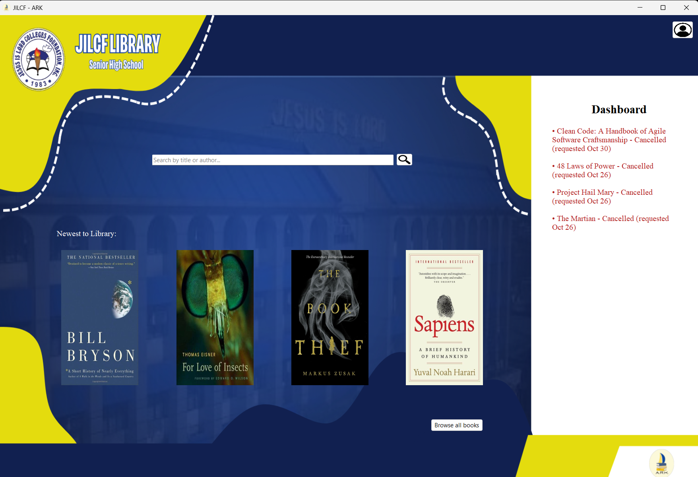
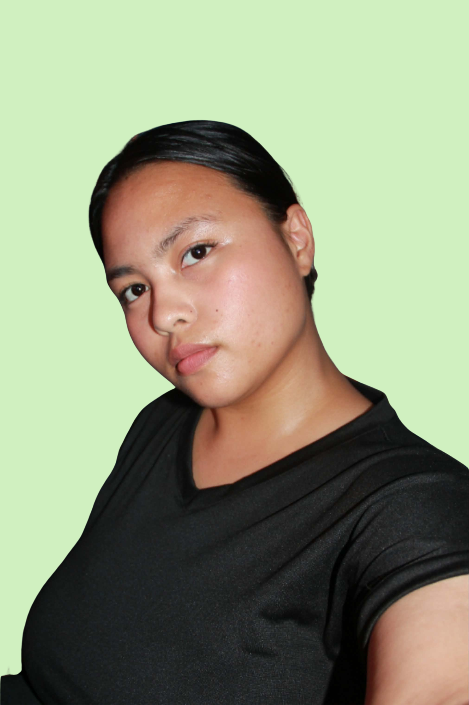

Add a screenshotimages/ark.png

Add her photohello, nice to meet you
Isha Amarado / Computer Science Student
I'm bubbly, creative, and curious individual with passion for learning, exploring ideas, and creating meaningful things.
I’m Isha Amarado, a Computer Science student at Pambayang Dalubhasaan ng Marilao. I enjoy exploring different aspects of technology, particularly designing user-friendly interfaces and managing databases. I focus on creating clean and organized designs, structuring data, and building systems that are both functional and easy to use. I value creativity, attention to detail, and continuous learning, and I enjoy combining my creative and technical skills to bring ideas to life.
I’m still growing as a developer, and I love learning alongside everyone. I’m looking for projects and internships where I can continue building my skills with a kind and curious team.

Add a screenshot